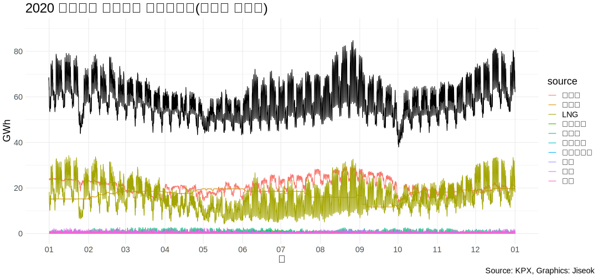

1.2020년 대한민국 전력거래량 분석
전력시장에 참여하는 발전기의 연료원별 일별 시간대별 전력거래량 합계 자료입니다(단위 : MWh).
* 본 데이터는 전력시장에 참여하는 발전기의 전력거래량으로, 전기사업법 시행령 제19조 1항 2호에 따라 한국전력공사와 직접 거래하는 발전기, 자가용 등은 포함하지 않습니다.
전력거래량은 소내용 및 주변압기 손실분 등을 제외한 송전단 기준 발전량이며, 수정정산 등에 의해 값이 변동될 수 있습니다.

전력거래소 데이터에 따르면 연료원은 유연탄, 원자력, LNG, 태양광, 풍력 등 23개 연료원으로 구분된다.
그 중에서 유연탄, 원자력, LNG 세 연료원으로 생산한 전력이 전체 전력거래량의 90% 이상을 차지한다

2. 유연탄, 원자력, LNG를 한 판에 놓고 보자 (화석연료 및 원자력)
아래 이미지는 2020년 한 해 동안 유연탄, 원자력, LNG 으로 생산된 전력량과 그 패턴을 나타낸다.
작은 네모는 하루를 시간별(0->23시)로 나타낸 것이다.
기저 부하를 담당하는 원자력과(노란색) 유연탄(녹색비스무리한 색)은 안정적으로 발전하는 것을 볼 수 있으며
시간별로 변동하는 수요에는 LNG가(출렁이는 주황색) 대응하는 것을 파악할 수 있다.

3. 유연탄 전력거래량
아래 이미지는 2020년 한 해 동안 유연탄으로 생산된 전력량과 그 패턴을 나타낸다.
작은 네모는 하루를 시간별(0->23시)로 나타낸 것이다. 2020년 전력생산 달력을 한눈에 보고 있다고 생각하면 된다.
우리가 알고있는 석탄화력 발전소의 대부분은 유연탄을 연료료 사용하여 전력을 생산한다.
약간의 발전량 변동은 보이지만, 기저부하*를 담당하는 에너지원 답게 시간과 요일에 변화 없이 안정적인 발전량을 확인할 수 있다.
*기저부하 : 일정기가 (일, 달, 년) 동안 총수요량이 변하지 않은 부분(출처: 한국에너지공단 에너지용어사전)

4. 원자력 전력거래량
아래 이미지는 2020년 한 해 동안 원자력으로 생산된 전력량과 그 패턴을 나타낸다.
석탄과 마찬가지로 원자력 발전도 기저부하를 담당한다. 원자력 발전은 안정적으로 대용량의 전력을 공급하며,
발전 특성상 한번 가동을하면 멈출 수 없고 출력 조절이 힘들기 때문에 발전률이 높고 일정한 발전량을 보여준다.

5. LNG 전력거래량
아래 이미지는 LNG 로 생산된 전력량과 그 패턴을 나타낸다.
LNG 발전은 석탄화력발전에 비해 미세먼지와 온실가스 배출을 크게 줄일 수 있는 장점을 갖고 있으며,
변동성이 큰 태양광/풍력 같은 신재생에너지의 한계를 보완하는 발전원으로 주목받고 있다
LNG 발전은 완전 정지 상태에서 최대 출력까지 도달하는 데 30분도 채 걸리지 않아 전력 변동성에 대처할 수 있는 에너지원으로 평가받는다
위에서 살펴본 유연탄(석탄화력), 원자력과는 다르게 시간별로 변동하는 수요에 대응하는 것을 확인할 수 있다.
6. 태양광 전력거래량
태양광 발전량은 어떻게 그려질까?
아래 이미지는 2020년 한 해 동안 태양광으로 생산된 전력량과 그 패턴을 나타낸다.
위에서 보았던 유연탄, LNG, 원자력에 비해 정말 미미하게 나타난다.
잘 보이진 않지만 낮시간에 발전량이 미미하게 증가하는 것을 파악할 수 있다.
태양광은 전력거래소와의 거래가 아닌 한국전력과의 PPA(Power Purchase Agreement, 전력구입계약)**를 통해 직접 거래되는 경우가 많기에,
지금 보여지는 발전량이 대한민국 전체 태양광 발전량과는 다를 수 있다.
**PPA 신청대상: 현행 전기사업법상 한전에 직접 전력을 판매하고자 하는 발전설비용량 1,000kW 이하
신재생에너지 발전사업자 및 자가용 신재생에너지 발전 설비 설치자

7. 풍력 전력거래량
풍력 발전량은 어떻게 그려질까?
아래 이미지는 2020년 한 해 동안 풍력으로 생산된 전력량과 그 패턴을 나타낸다.
거의 보이지 않는다... 태양광은 낮시간만 발전하기 때문에 그 패턴이 풍력은 그마저도 확인이 어렵다.

8. 총 전력거래량
2020년 총 전력거래량 달력을 히트맵을 적용하여 나타냈다.붉은색이 진할수록 전력거래량이 많음을 보여준다.
주중과 주말을 비교했을 때 주중의 전력거래량이 많은 것이 월과 관계 없이 파악되며,
전력소비가 많은 동절기(1, 12월), 하절기(8,9)월에 전력거래량이 증가하는 것을 확인할 수 있다.